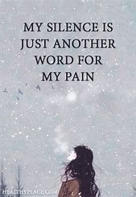
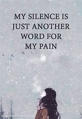
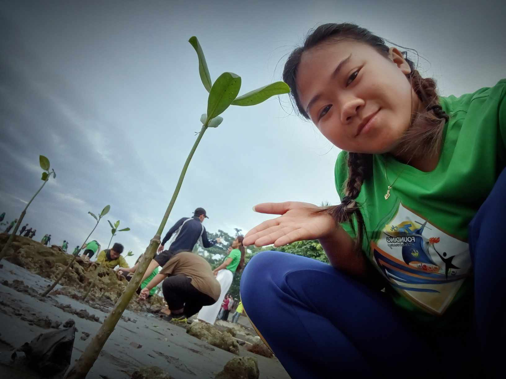
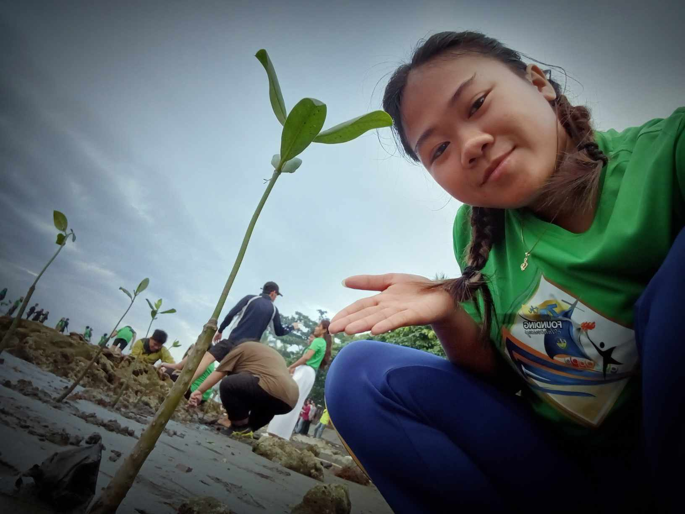

About My self

Hello, my name Bea Azenith B. Taglucop, and I am currently 21 years old.
I Live in Dagohoy street poblacion Carmen Agusan del Norte, where I’ve made my home.
As my gender.
Growing up, I was always considered a as a shy person, and honestly, I really like made an effort but they dont appreciate. Those two years became the best of my life. Now, here I am in college, working hard to complete my degree and pursue my future goals.
This is my life story
 

As you may already know, Im a shy person, but im a hardworking they hold value because they represent something I truly enjoy doing. Even doing something like work and this is my hobby that brings me happiness, and that's what matters most to me. It’s something that allows me to express myself and find joy in work,
My Hobbies

 

I really enjoy cooking like, There's something about immersing myself in a story and I find exciting when im cooking.
Ever since I was a kid, i like a vollyball but my skills is not exist because im a shy person and im shy to join the tournamnet.
I absolutely love listening to music, and honestly, I can't imagine what I'd do without it. Whenever I'm feeling sad, stressed, music has this amazing ability to help me calm down and put my mind. a music makes me feel understood or just one that lifts my mood, I always find comfort in it. Every song I come across.
The things that I like

when im here at college there are many people when i look and i become my friends not true firend but just fun.
Friends?